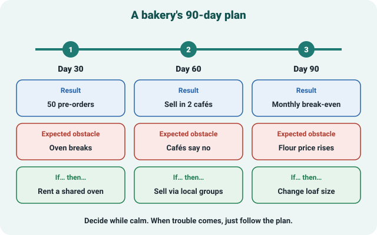

K6 · Adaptability and persistence › Level 4 Proficient
Take initiative and bounce back from failure
This lesson completes Sheet 3: 90-day plan and lessons-learned note. Print template. It teaches initiative as a work skill. The emotional side of failure is covered on tamhonkhoe.com (in Vietnamese). The lessons-learned note reuses the approach in When work goes off plan (N3).
1. Objectives
- Write a 90-day plan with 3 milestones, each with an expected obstacle and a fallback.
- Write a lessons-learned note after a failure, with one action within 48 hours.
2. Retrieval warm-up
- What are the five boxes of the experiment sheet?
- How many elements does a pivot change?
Answers
- Hypothesis; test; metric; thresholds; time limit and maximum cost.
- One element, keeping the rest.
Review: Experiments and pivots.
3. Explanation
Founders have no boss handing out work. If you do not start, nobody will start for you.
Initiative is behaviour, not personality. Research on personal initiative describes three behaviours that can be learned:
Three initiative behaviours
- Self-startingDoing what needs doing before anyone asks.
- Looking aheadAnticipating obstacles and preparing now.
- Overcoming barriersWhen blocked, trying another way rather than stopping at the first try.
A 90-day plan with fallbacks. Split 90 days into 3 milestones of 30 days. For each milestone, write:
- Result: measurable. For example "20 paying customers", not "grow customers".
- Expected obstacle: what is most likely to delay the milestone?
- If… then…: "If the supplier is more than 5 days late, then I order from a second supplier."
An "if… then…" sentence lets you decide in advance, while you are calm. When the problem happens, you just act.

Bouncing back from failure. Small failures happen to founders every week. Instead of only feeling bad or blaming others, write a four-line lessons-learned note:
- What happened: the facts, without judgement.
- What was in my control: what you could have done differently.
- Adjustment: what you will do differently next time.
- Action within 48 hours: one small task, with a deadline.
The 48-hour action is the most important part. It turns the lesson into action.
4. Workplace example
Hypothetical scenario. Nadia runs an online shop selling a spicy grilled snack. Her first promotion gets only 12 orders, when she had prepared for 80.
She writes a lessons-learned note. What happened: she posted the promotion once on her own page at 14:00, and few people saw it. In my control: she did not ask regular customers when they usually order. Adjustment: ask customers first, post at that time, and post in neighbourhood groups too. 48-hour action: message 20 past customers asking when they usually order snacks.
She writes a 90-day plan. Milestone 1: 150 orders in the month. Expected obstacle: couriers off for a public holiday. "If couriers are off for more than 2 days, then I offer collection from my kitchen, with a small discount."
Why this works: the failure becomes a specific action within 2 days. The biggest obstacle has a plan before it happens.
5. Practice
Hypothetical scenario. Phil runs an air-conditioner cleaning service. This week, a major client cancelled their contract because his staff arrived late twice.
Write a four-line lessons-learned note. Write one 30-day milestone with an "if… then…" sentence.
Hint 1
In his control: did he have any way to know a worker was about to be late?
Hint 2
The 48-hour action could be calling the client who cancelled, or setting a lateness rule for staff.
Model answer
Lessons-learned note
- What happened: a worker arrived 40 minutes late at two appointments in a row. The client cancelled a 6-month contract.
- In my control: he booked jobs back to back, with no allowance for rush-hour traffic.
- Adjustment: leave 30 minutes between jobs; workers call 15 minutes ahead if they may be late.
- 48-hour action: call the client to apologise and offer one free cleaning; fix next week's schedule.
30-day milestone: no job more than 10 minutes late. If one worker is late twice in a week, then Phil spends a day with them to see why.
(The details are hypothetical.)
6. Self-check
Choose an answer. Every option has an explanation.
Question 1. Which action shows "looking ahead"?
-
Not quite. This is reacting after the problem has happened.
-
Correct. Correct. You anticipate the obstacle and prepare now.
-
Not quite. Overtime may be needed, but it is not preparing in advance for an obstacle.
Question 2. Which is a usable "if… then…" sentence?
-
Not quite. It is unclear what might happen, and unclear what you will do.
-
Correct. Correct. It has a specific sign and a specific action decided in advance.
-
Not quite. "Think of something" is not an action. This does not help you decide in advance.
Question 3. Which line correctly fills "What was in my control" on the lessons-learned note?
-
Not quite. This blames outside factors. You can do nothing with it.
-
Correct. Correct. This is something you could have done differently, and can do next time.
-
Not quite. This judges yourself. It is not a specific thing to adjust.
Question 4. According to Campos and colleagues (2017) in Togo, which result is correct?
-
Not quite. The opposite. Traditional training raised them by about 11%, not statistically significant.
-
Correct. Correct. This is the main result of the study published in Science.
-
Not quite. The study shows initiative behaviour can be learned through training.
7. Reflection
- The last time something failed at work, how long did it take you to do the next thing?
- Of the three initiative behaviours, which do you do least?
8. Real-world application
In the next 7 days, write Sheet 3 for the next 90 days. For each small failure this week, write the four-line note and do the 48-hour action.
Level of evidence. Campos, Frese, Goldstein and colleagues (2017), Science 357(6357): a randomised trial with about 1,500 small business owners in Togo. Personal initiative training raised profits by about 30% after two years. Traditional business training raised them by about 11%, which was not statistically significant. The setting in Togo differs from other countries, so the result may not repeat exactly. The "if… then…" sentence, Sheet 3 and the four-line note are this site's proposed method.
9. Metadata
| skill | K6 · Adaptability and persistence |
|---|---|
| level | Level 4 · Proficient |
| group | N7 |
| framework_map | EntreComp: Taking the initiative; Motivation and perseverance; Planning and management; WEF: Resilience, flexibility and agility; SkillsFuture CCS: Adaptability; LifeComp: P2 Flexibility (reference only) |
| original | Vietnamese version |
| updated | 2026-11-14 |
Finish the lesson
Mark it as done and the site suggests reviews after 1, 3 and 7 days. The data stays on your device only.
Suggested reviews: